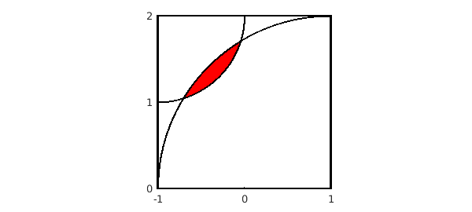

1. Two overlapping circles
Suppose you draw a quarter-circle of radius 1 about the point $(x,y) = (-1,1)$ and another quarter-circle of radius 2 about the point $(x,y) = (1,-1)$. We can draw the picture like this. Along the way, we find the two points of intersection of the two circles and use them to fill in the overlap region in red. (There must be a simpler way to do this in Chebfun.)
bigcircle = chebfun(@(x) sqrt(4-(x-1).^2),'splitting','on');
littlecircle = chebfun(@(x) 2-sqrt(1-(x+1).^2),[-1,0],'splitting','on');
plot([-1 1 1 -1 -1],[0 0 2 2 0],'k'), hold on, axis equal
x = roots( bigcircle{-1,0} - littlecircle );
x1 = x(1), x2 = x(2)
t = chebfun(@(t) t,[x1 x2]); t_reverse = chebfun(@(t) x1+(x2-t),[x1 x2]);
fill(join(t,t_reverse),join(littlecircle(t),bigcircle(t_reverse)),'r')
plot(bigcircle,'k',littlecircle,'k'), axis([-1 1 0 2]), hold off
set(gca,'xtick',-1:1,'ytick',0:2)
x1 = -0.705718913883074 x2 = -0.044281086116926

2. Area of the overlap region
This configuration comes from Alan Stevens' 2016 review [2] of Professor Povey's Perplexing Problems [1], a book published in 2015. The problem posed in [1] and [2] is, what is the area of the overlap region? Here is the numerical answer as computed by Chebfun:
area = sum( bigcircle{x1,x2} - littlecircle{x1,x2} )
area = 0.107976470497047
This is a tricky problem! Here is the exact solution given by Prof. Povey:
exact = acos(5*sqrt(2)/8) + 4*acos(11*sqrt(2)/16) - sqrt(7)/2
exact = 0.107976470497046
3. References
[1] T. Povey, Professor Povey's Perplexing Problems: Pre-University Physics and Maths Puzzles with Solutions, One World Publications, 2015, pp. 26-28.
[2] A. Stevens, review of above book, Mathematics Today, June 2016, p. 152.